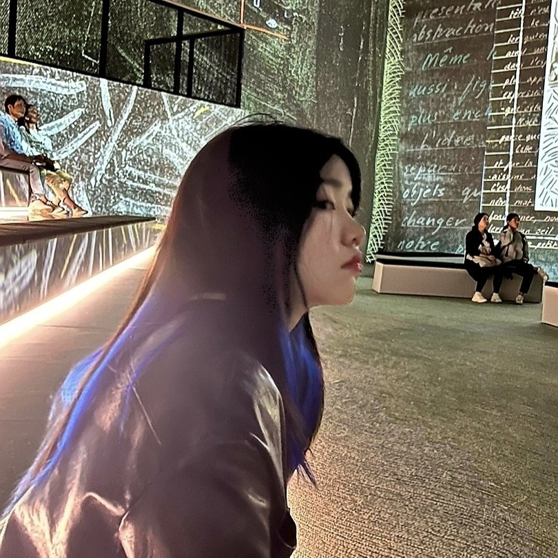

profile
my_fav
timetable

파란 머리 시절 사진입니다
지금은 물 다 빠져서 다시 염색 고민중,,,
Hong Suji
생년월일: 2002.09.30
전화번호: 010-9607-9453
소속: 한국외대 공과대학 정보통신공학과 21학번
인스타그램:
@ssoo_zl
mbti: ESFP 또는 ENFP
지금 심정: 공학관에 7시간 갇혀있어요,,,,